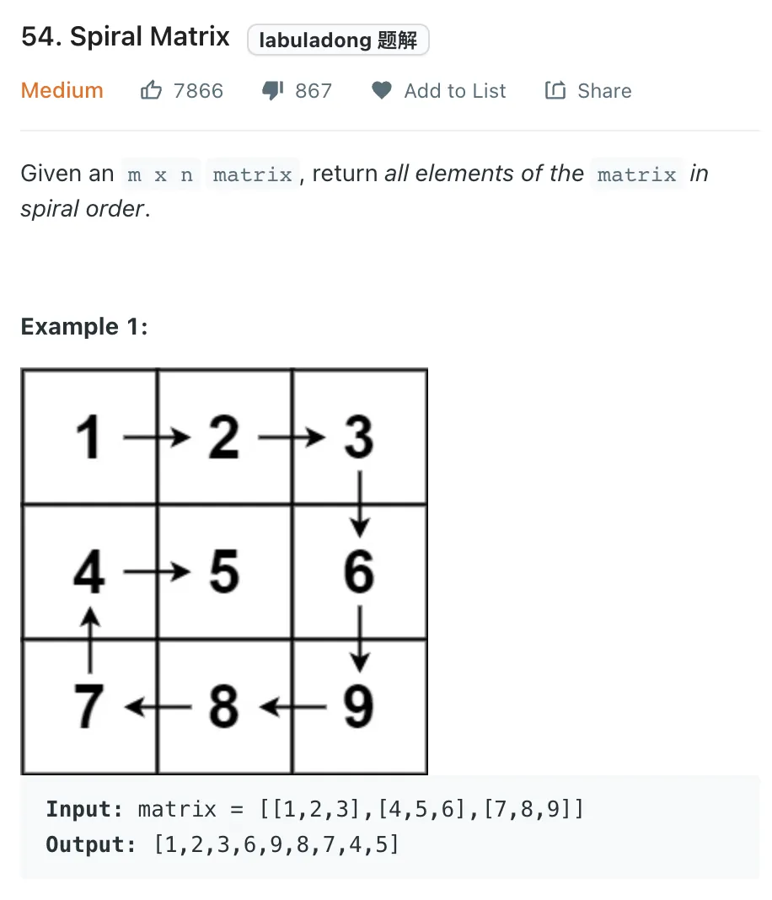
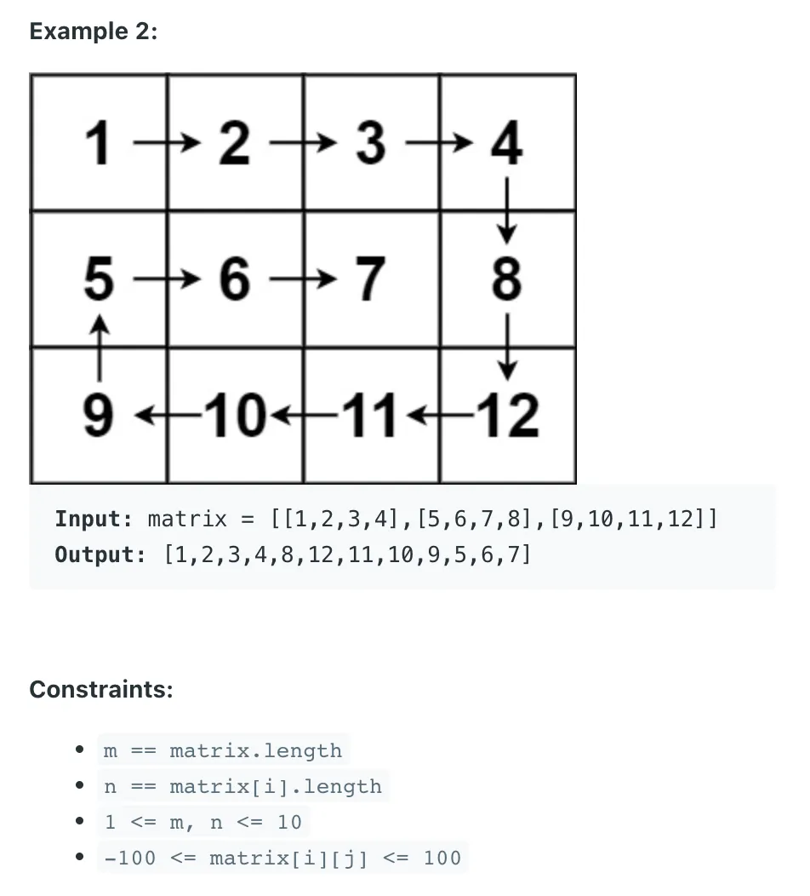

54. Spiral Matrix
考過的公司：Bytedance、Shopee、tiktok
Question


✍🏽 My Solution
Runtime: 0 ms, faster than 100.00% of Java online submissions for Spiral Matrix. Memory Usage: 42.4 MB, less than 26.27% of Java online submissions for Spiral Matrix.
class Solution {
public List<Integer> spiralOrder(int[][] matrix) {
List<Integer> res = new ArrayList<>();
int m = matrix.length, n = matrix[0].length;
int left = 0, right = n-1;
int top = 0, bottom = m-1;
while (res.size() < m * n) {
// go right
if (top <= bottom) {
for (int i = left; i <= right; i++) {
res.add(matrix[top][i]);
}
top++;
}
// go bottom
if (left <= right) {
for (int i = top; i <= bottom; i++) {
res.add(matrix[i][right]);
}
right--;
}
// go left
if (top <= bottom) {
for (int i = right; i >= left; i--) {
res.add(matrix[bottom][i]);
}
bottom--;
}
// go top
if (left <= right) {
for (int i = bottom; i >= top; i--) {
res.add(matrix[i][left]);
}
left++;
}
}
return res;
}
}
🧠 Thought Process
- Why did I choose this particular implementation?
- What is the time/space complexity of my solution? How do I know?
- time: O(mn)
- space: O(1)
- What mistakes did I make?
- 欄跟列的方向寫反，忘記怎麼判斷邊界
- 忘了寫while迴圈
Solution #1 [模擬]
class Solution {
public List<Integer> spiralOrder(int[][] matrix) {
List<Integer> list = new ArrayList<Integer>();
if (matrix.length == 0 || matrix[0].length == 0 ) return list;
int top = 0;
int bottom = matrix.length - 1;
int left = 0;
int right = matrix[0].length - 1;
while (true) {
// go right
for (int i = left; i <= right; i++) list.add(matrix[top][i]);
top++;
if(top > bottom) break;
// go bottom
for (int i = top; i <= bottom; i++) list.add(matrix[i][right]);
right--;
if(left > right) break;
// go left
for (int i = right; i >= left; i--) list.add(matrix[bottom][i]);
bottom--;
if(top > bottom) break;
// go top
for (int i = bottom; i >= top; i--) list.add(matrix[i][left]);
left++;
if(left > right) break;
}
return list;
}
}
Explanation (in my words)
- How does their solution work?
- 從第一個位置開始沿著邊界走，遇到邊界就轉彎，每次轉彎就將完整的邊 - 1
- 随着螺旋遍历，相应的边界会收缩，直到螺旋遍历完整个数组
- What is the space/time complexity of their solution?
- time: O(m*n)
- space: O(1)